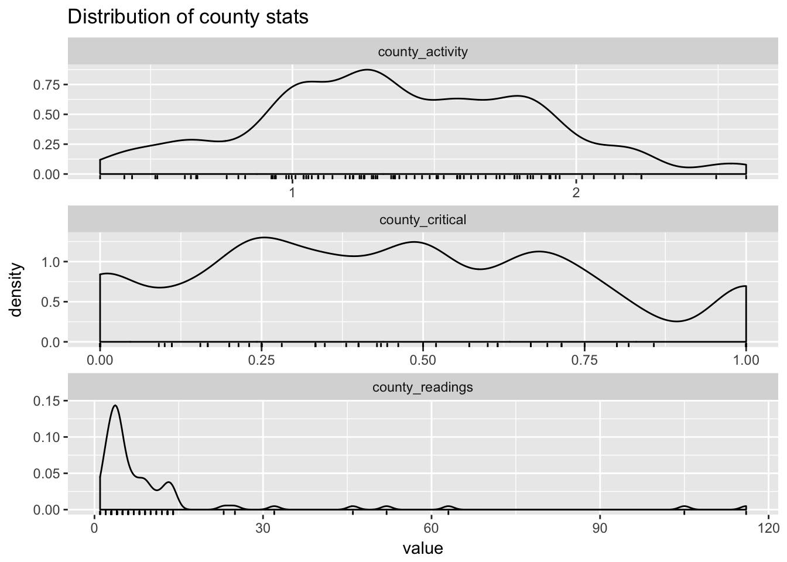
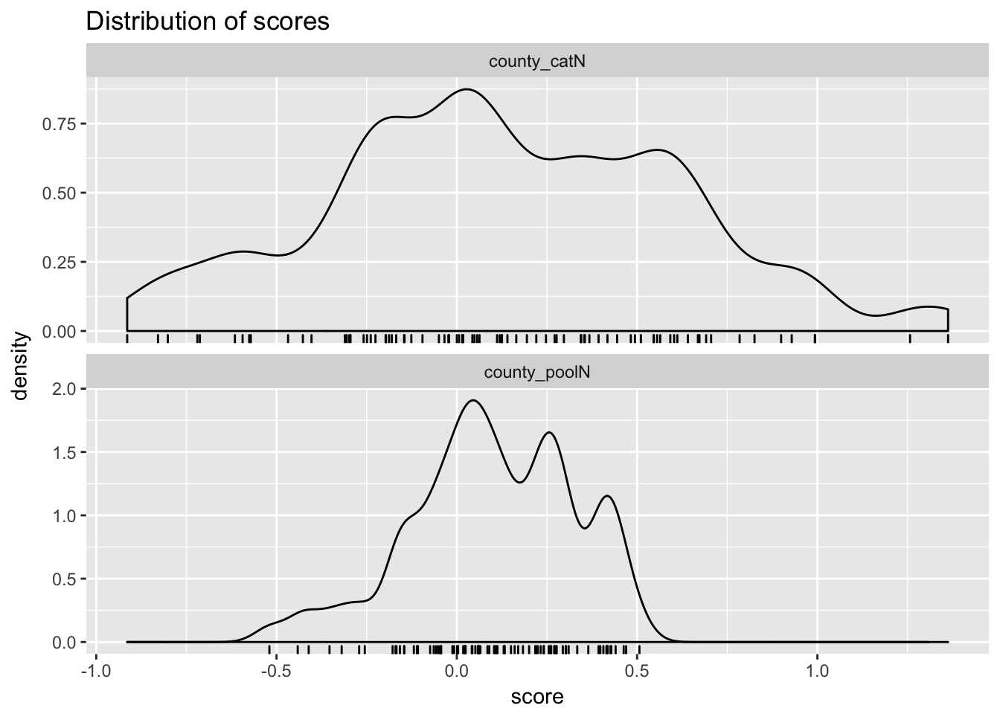
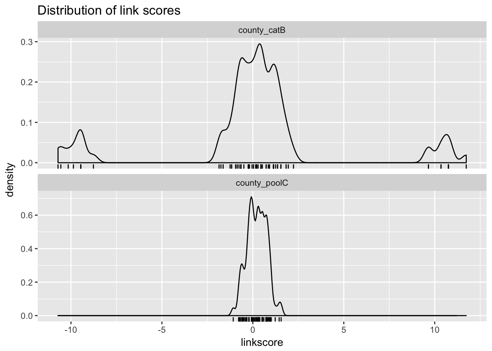

One of the services that vtreat provides is level coding (what we sometimes call impact coding): converting the levels of a categorical variable to a meaningful and concise single numeric variable, rather than coding them as indicator variables (AKA “one-hot encoding”). Level coding can be computationally preferable to one-hot encoding for variables that have an extremely large number of possible levels.
By default, vtreat level codes to the difference between the conditional means and the grand mean (catN variables) when the outcome is numeric, and to the difference to the conditional expectations and the global expectation of the target class (catB variables) when the outcome is categorical. These aren’t the only possible level codings. For example, the ranger package can encode categorical variables as ordinals, sorted by the conditional expectations/means. While this is not a valid encoding for all possible models (it is not valid for linear or logistic regression, for example), it is valid for tree-based methods, and has the advantage of keeping the original levels distinct, which impact coding may not. That is, two levels with the same conditional expectation would be conflated by vtreat’s coding. This may not be a problem – but sometimes, it may.
So the data scientist may want to use a level coding different from what vtreat defaults to. In this article, we will demonstrate how to implement custom level encoders in vtreat. We assume you are familiar with the basics of vtreat: the types of derived variables, how to create and apply a treatment plan, etc.
For our example, we will implement level coders based on partial pooling, or hierarchical/multilevel models (Gelman and Hill, 2007). We’ll leave the details of how partial pooling works to a subsequent article; for now, just think of it as a score that shrinks the estimate of the conditional mean to be closer to the unconditioned mean when there are too few measurements to make an accurate estimate.
We’ll implement our partial pooling encoders using the lmer() (multilevel linear regression) and glmer() (multilevel generalized linear regression) functions from the lme4 package. For our example data, we’ll use radon levels by county for the state of Minnesota (Gelman and Hill, 2007. You can find the original data here).
library("vtreat")
library("lme4")## Loading required package: Matrixlibrary("dplyr")##
## Attaching package: 'dplyr'## The following objects are masked from 'package:stats':
##
## filter, lag## The following objects are masked from 'package:base':
##
## intersect, setdiff, setequal, unionlibrary("tidyr")##
## Attaching package: 'tidyr'## The following object is masked from 'package:Matrix':
##
## expandlibrary("ggplot2")
# example data
srrs = read.table("srrs2.dat", header=TRUE, sep=",", stringsAsFactor=FALSE)
# target: log of radon activity (activity)
# grouping variable: county
radonMN = filter(srrs, state=="MN") %>%
select("county", "activity") %>%
filter(activity > 0) %>%
mutate(activity = log(activity),
county = base::trimws(county)) %>%
mutate(critical = activity>1.5)
str(radonMN)## 'data.frame': 916 obs. of 3 variables:
## $ county : chr "AITKIN" "AITKIN" "AITKIN" "AITKIN" ...
## $ activity: num 0.788 0.788 1.065 0 1.131 ...
## $ critical: logi FALSE FALSE FALSE FALSE FALSE FALSE ...For this example we have three columns of interest:
county: 85 possible valuesactivity: the log of the radon reading (numerical outcome)critical: TRUE when activity > 1.5 (categorical outcome)The goal is to level code county for either the regression problem (predict the log radon reading) or the categorization problem (predict whether the radon level is “critical”).
radonMN %>% group_by(county) %>%
summarize(county_activity = mean(activity),
county_critical = mean(critical),
county_readings = n()) %>%
gather(key = measure, value=value,
county_activity, county_critical, county_readings) %>%
ggplot(aes(x=value)) +
geom_density(adjust=0.5) + geom_rug(sides="b") +
facet_wrap(~measure, ncol=1, scale="free") +
ggtitle("Distribution of county stats")
As the graph shows, the conditional mean of log radon activity by county ranges from nearly zero to about 3, and the conditional expectation of a critical reading ranges from zero to one. On the other hand, the number of readings per county is quite low for many counties – only one or two – though some counties have a large number of readings. That means some of the conditional expectations are quite uncertain.
Let’s implement level coders that use partial pooling to compute the level score.
Regression
For regression problems, the custom coder should be a function that takes as input:
v: a string with the name of the categorical variablevcol: the actual categorical column (assumed character)y: the numerical outcome columnweights: a column of row weightsThe function should return a column of scores (the level codings). In keeping with how the catN and catB variables are calculated, vtreat encodes the custom scores as deviations from the grand mean of the returned column.
For our example, the function builds a lmer model to predict y as a function of vcol, then returns the predictions on the training data.
# @param v character variable name
# @param vcol character, indpendent or input variable
# @param y numeric, dependent or outcome variable to predict
# @param weights row/example weights
# @return scored training data column
ppCoderN <- function(v, vcol,
y,
weights) {
# regression case y ~ vcol
d <- data.frame(x = vcol,
y = y,
stringsAsFactors = FALSE)
m <- lmer(y ~ (1 | x), data=d, weights=weights)
predict(m, newdata=d)
}Categorization
For categorization problems, the function should assume that y is a logical column, where TRUE is assumed to be the target outcome. This is because vtreat converts the outcome column to a logical while creating the treatment plan.
# @param v character variable name
# @param vcol character, independent or input variable
# @param y logical, dependent or outcome variable to predict
# @param weights row/example weights
# @return scored training data column
ppCoderC <- function(v, vcol,
y,
weights) {
# classification case y ~ vcol
d <- data.frame(x = vcol,
y = y,
stringsAsFactors = FALSE)
m = glmer(y ~ (1 | x), data=d, weights=weights, family=binomial)
predict(m, newdata=d, type='link')
}You can then pass the functions in as a named list into either designTreatmentsX or mkCrossFrameXExperiment to build the treatment plan. The format of the key is “[n|c].levelName[.option]*" (right now the only supported option is “center”). The prefacing picks the model type: numeric or regression starts with ‘n.’ and the categorical encoder starts with ‘c.’. Our example coders can be passed in we show below.
customCoders = list('n.poolN.center' = ppCoderN,
'c.poolC.center' = ppCoderC)Let’s build a treatment plan for the regression problem.
# I only want to create the cleaned numeric variables, the isBAD variables,
# and the level codings (not the indicator variables or catP, etc.)
vartypes_I_want = c('clean', 'isBAD', 'catN')
treatplanN = designTreatmentsN(radonMN,
varlist = c('county'),
outcomename = 'activity',
codeRestriction = vartypes_I_want,
customCoders = customCoders,
verbose=FALSE)
scoreFrame = treatplanN$scoreFrame
scoreFrame %>% select(varName, sig, origName, code)## varName sig origName code
## 1 county_poolN 2.318258e-20 county poolN
## 2 county_catN 4.730291e-17 county catNNote that the treatment plan returns both the catN variable (default level encoding) and the pooled level encoding (poolN). You can restrict to just using one coding or the other using the codeRestriction argument in prepare().
Let’s compare the two level encodings.
# create a frame with one row for every county,
measframe = data.frame(county = unique(radonMN$county),
stringsAsFactors=FALSE)
outframe = prepare(treatplanN, measframe)
# If we wanted only the new pooled level coding,
# (plus any numeric/isBAD variables), we would
# use a codeRestriction:
#
# outframe = prepare(treatplanN,
# measframe,
# codeRestriction = c('clean', 'isBAD', 'poolN'))
gather(outframe, key=scoreType, value=score,
county_poolN, county_catN) %>%
ggplot(aes(x=score)) +
geom_density(adjust=0.5) + geom_rug(sides="b") +
facet_wrap(~scoreType, ncol=1, scale="free_y") +
ggtitle("Distribution of scores")
Notice that the poolN scores are “tucked in” compared to the catN encoding. In a later article, we’ll show that the counties with the most tucking in (or shrinkage) tend to be those with fewer measurements.
We can also code for the categorical problem.
# For categorical problems, coding is catB
vartypes_I_want = c('clean', 'isBAD', 'catB')
treatplanC = designTreatmentsC(radonMN,
varlist = c('county'),
outcomename = 'critical',
outcometarget= TRUE,
codeRestriction = vartypes_I_want,
customCoders = customCoders,
verbose=FALSE)
outframe = prepare(treatplanC, measframe)
gather(outframe, key=scoreType, value=linkscore,
county_poolC, county_catB) %>%
ggplot(aes(x=linkscore)) +
geom_density(adjust=0.5) + geom_rug(sides="b") +
facet_wrap(~scoreType, ncol=1, scale="free_y") +
ggtitle("Distribution of link scores")
Notice that the poolC link scores are even more tucked in compared to the catB link scores, and that the catB scores are multimodal. The smaller link scores means that the pooled model avoids estimates of conditional expectation close to either zero or one, because, again, these estimates come from counties with few readings.
For this example, we used the lmer4 package to create custom level codings. Once calculated, vtreat stores the coding as a lookup table in the treatment plan. This means lmer4 is not needed to prepare new data. In general, using a treatment plan is not dependent on any special packages that might have been used to create it, so it can be shared with other users with no extra dependencies.
When using mkCrossFrameXExperiment, note that resulting cross frame will have a slightly different distribution of scores than what the treatment plan produces. This is true even for catB and catN variables. This is because the treatment plan is built using all the data, while the cross frame is built using n-fold cross validation on the data. See the cross frame vignette for more details.